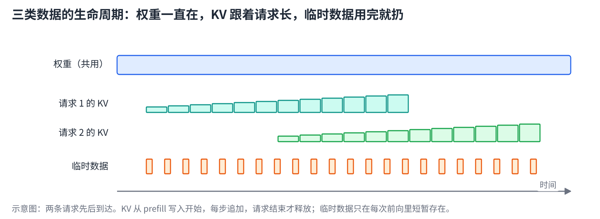
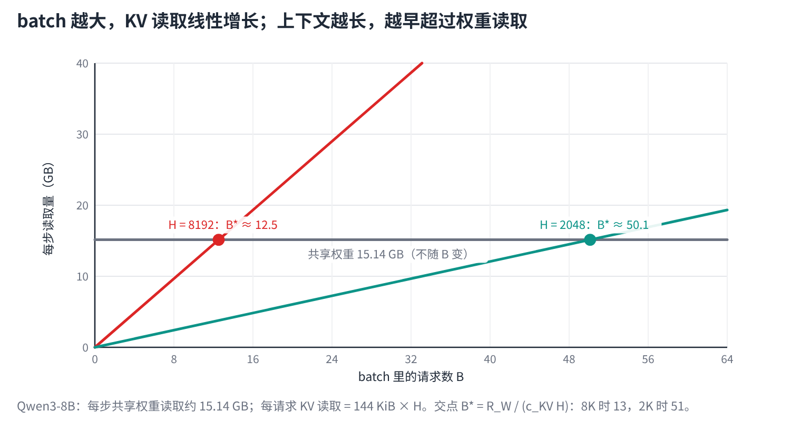
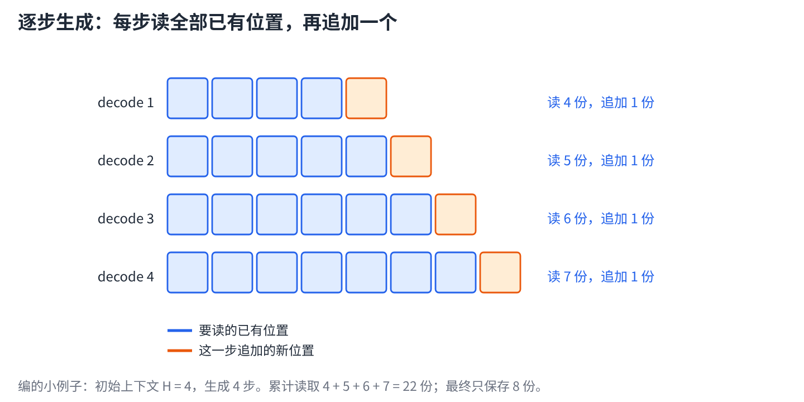
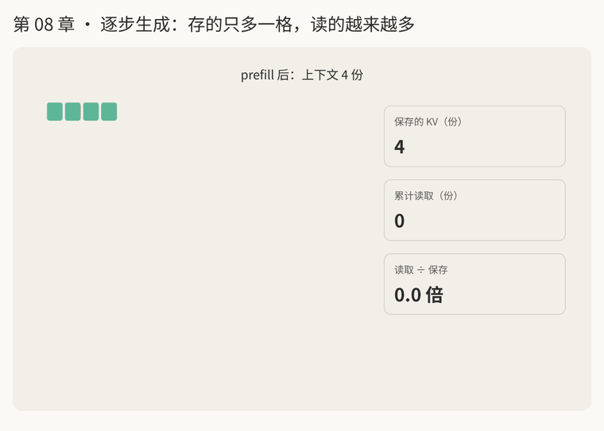

第 08 章 · 自回归生成的资源账：存一次的、每步读的、用完就扔的
本地运行
git clone https://github.com/wikieden/ai-infra-from-constraints
cd ai-infra-from-constraints/code/notebooks
pip install jupyterlab torch numpy
jupyter lab ch08_generation_budget.ipynb也可以下载后直接用 VS Code 打开 .ipynb 运行。需要 GPU 的章节在 Colab 里选「代码执行程序 → 更改运行时类型 → GPU」。
本章回答：一个请求从头生成到尾，权重、KV、临时数据各占多少、读多少？batch 加到多少，读 KV 就比读权重还多？为什么一个请求结束时只存了 1.27 GiB 的 KV，过程中却读了 1224 GiB？
讲解日期：2026-11-24 · 上一章：第 07 章 计算图与张量结构 · 下一章：第 09 章 KV 怎么变小 ①
对应原文：materials/ai-infra-book/manuscripts/02-模型架构.md§2.2 L214–L301（图 2-7、2-8，例题 2-2、2-3）
本章缩写：BF16 = Brain Float 16（Google Brain 提出的 / 浮点 / 16 位）· FFN = Feed-Forward Network（前馈 / 网络）· HBM = High Bandwidth Memory（高 / 带宽 / 内存）· KV = Key-Value（键 / 值）。全部缩写见 缩写与术语表
第 02 章用一个请求讲过"权重加载一次、每步读一遍"，第 05 章算过批内复用。本章把它们放到同一张账本上：存储量看某一时刻要保留什么，访问量看执行过程中累计读写了多少。两者能差三个数量级。
讲解
第一步：为什么要缓存 K、V，而不缓存 Q（2026-11-24）
类比：开会记录。 每个人发过言后，把"我是谁"（K）和"我说了什么"（V）记在白板上；后来的人提问（Q）时对着白板找相关的人、读他的发言。提问的人问完就走，他的问题不用留；白板上的记录要一直留着给后来的人用。
原文 L220–L224：
- 如果每生成一个 token 都把整个前缀重新送进模型，旧 token 的投影和 FFN 会一遍遍重算。
- 因果模型里旧 token 看不到后来的 token，在权重和位置不变时，旧 token 的 \(K\)、\(V\) 算一次就不会变（第 01 章、第 02 章）。
- 后来的 token 会产生自己的 \(Q\)，用它去对旧 token 的 \(K\) 打分、汇总 \(V\)；旧的 \(Q\) 已经完成了任务，所以长期保存的是 \(K\) 和 \(V\)。
公式（原文 L229）：每个上下文 token 的 KV 字节数
- 2：\(K\) 和 \(V\) 各一份；\(L\)：层数；\(n_{\mathrm{KV}}\)：KV 头数；\(d_h\)：头维度；\(b_{\mathrm{KV}}\)：每个元素几字节。
例子：Qwen3-8B，BF16：\(2 \times 36 \times 8 \times 128 \times 2 = 147{,}456\) 字节 \(= 144\) KiB。8192 个上下文 token 就是 \(8192 \times 144\) KiB \(= 1.125\) GiB；再处理一个 token 追加 144 KiB。
- 层数或 KV 头数减半，\(c_{\mathrm{KV}}\) 减半（第 09 章的出发点）。
- batch 里每条独立请求各有一份。
一句话：KV 缓存把"重算旧 token"换成"存下并读取旧 token 的 K、V"；Qwen3-8B 每个 token 144 KiB。
第二步：三类数据：权重、上下文状态、临时数据（2026-11-24）
类比：厨房里的三类东西。 菜谱（权重）一直放在书架上，所有订单共用；每桌客人的点单记录（上下文状态）跟着这桌走，越点越长；切好的配菜（临时数据）下锅就用完，砧板马上给下一道菜。
原文 L238–L242：
| 类别 | 怎么存、怎么复用 | 算什么 |
|---|---|---|
| 权重 | 多次调用之间不变，所有请求共用 | 常驻字节、被访问的权重、批内复用 |
| 上下文状态（KV） | 跟着请求保留，持续追加 | 实际占用、每步读写量 |
| 临时数据（激活等） | 在算子或阶段里产生，用完释放 | 张量尺寸、同时要保存的部分（峰值） |

图 8-1 · 横轴是时间（两条请求先后到达）。权重条从头到尾；每条请求的 KV 从 prefill 开始一路变长，请求结束才释放；临时数据只在每次前向里短暂出现。
两个容易混的量（原文 L250）：
- 存储量：某一时刻还要留着的数据（峰值看同一时刻还活着的张量）。
- 访问量：执行过程中累计读写的次数 × 大小。例如一步 decode 把整段旧上下文读一遍，逻辑读取量是 \(c_{\mathrm{KV}}H\)；连续多步要逐步累加。
一句话：权重共用且常驻，KV 随请求增长，临时数据用完就扔；存储量和访问量要分开算。
第三步：batch 加到多少，读 KV 就比读权重多（2026-11-24）
类比：校车（第 05 章）多了一个变化：每个学生还背着自己的书包。 车只有一辆（权重读一遍），书包却人手一个（每个请求的 KV）。学生越多，书包的总重越快超过车本身。
公式（原文 L257）：每批读一遍共享权重 \(R_W\)，每个请求读一遍自己的上下文 \(c_{\mathrm{KV}}H\)：
例题 2-2（原文 L252–L260）：Qwen3-8B，\(R_W = 15{,}136{,}811{,}008\) 字节（第 02 章的 15.14 GB），\(c_{\mathrm{KV}} = 147{,}456\) 字节。
| 每请求上下文 \(H\) | \(B_*\) | 最小整数 batch |
|---|---|---|
| 8192 | \(15{,}136{,}811{,}008 / (147{,}456 \times 8192) \approx 12.5\) | 13 |
| 2048 | \(\approx 50.1\) | 51 |

图 8-2 · 横轴 batch，纵轴每步的读取量。灰线是共享权重（不随 batch 变）；两条斜线是 8K 和 2K 上下文的 KV 读取。交点就是 \(B_*\)。
上下文缩短到 1/4，\(B_*\) 约变 4 倍。上下文越长，批内复用的收益越早被 KV 读取吃掉。这修正了第 05 章只算权重的转折点：真实的 decode 步还要加上 \(B\,c_{\mathrm{KV}}H\) 这一项（第 05 章第四步的 \(R_{\mathrm{state},1}\)）。
一句话：权重读取被 batch 分摊，KV 读取却随 batch 线性增长；Qwen3-8B 在 8K 上下文下，batch 超过 13 就是读 KV 多于读权重。
第四步：生成一整段回答，KV 累计读了多少（2026-11-24）
类比：每写一句话都把前面全文读一遍。 文章越写越长，每次要读的越来越多；写完时文章本身没多长，但你累计读过的字数是它的几百倍。
原文 L266：一条请求，已有前缀 \(S\)，本次输入 \(P\)，最终返回 \(G\) 个 token。令 \(H = S + P\)。prefill 产生第一个输出，之后做 \(n_d = G - 1\) 次 decode（第 02 章：输出 \(N\) 个 token 要 \(N\) 次前向）。
公式（原文 L279）：第 \(j\) 次 decode（\(j\) 从 0 数）开始前，上下文长度是 \(H + j\)，每次都读一遍：
- 最终保存：\(c_{\mathrm{KV}}(H + n_d)\)（最后一个输出没送进模型，没有它的 KV）。
- 生成期间新增：\(c_{\mathrm{KV}}\,n_d\)；本次请求全部新增还要加 prefill 写入的 \(c_{\mathrm{KV}}P\)。

图 8-3 · 初始上下文 4 个 token，生成 4 步（编的小例子）。每一行比上一行多一格；把每一行的蓝格加起来就是累计读取量。
小例子（编的）：\(H = 4\)，\(n_d = 4\)。累计读 \(4 + 5 + 6 + 7 = 22\) 份 KV；公式 \(4 \times 4 + 4 \times 3 / 2 = 22\)。最终保存 \(4 + 4 = 8\) 份。
例题 2-3（原文 L284–L286）：Qwen3-8B，\(S = 0\)，\(P = 8192\)，\(G = 1025\)，所以 \(n_d = 1024\)。
| 量 | 算式 | 值 |
|---|---|---|
| 累计读取的 token·次 | \(1024 \times 8192 + 1024 \times 1023 / 2\) | 8,912,384 |
| 累计读取量 | × 144 KiB | ≈ 1224 GiB |
| 生成期间新增 | \(1024 \times 144\) KiB | 144 MiB |
| 结束时保存 | \((8192 + 1024) \times 144\) KiB | ≈ 1.27 GiB |
累计读取是最终存储的近千倍：已经进了上下文的 token，后面每一步都要再读一遍。
运算量也一样（原文 L291）：每步固定部分 \(F_0\)（投影、FFN，按 1 行算）加上和上下文交互的部分 \(a \times\) 上下文长度：
输出变长时，固定部分线性增长，上下文部分有一块按 \(n_d^2\) 增长。
场景代码：Hugging Face 的 KV 缓存对象可以直接看到它每步变长：
import torch
from transformers import AutoModelForCausalLM, AutoTokenizer, DynamicCache
tok = AutoTokenizer.from_pretrained("Qwen/Qwen3-0.6B") # 小模型，CPU 也能跑
model = AutoModelForCausalLM.from_pretrained("Qwen/Qwen3-0.6B")
ids = tok("帮我找代码里的 bug", return_tensors="pt").input_ids
cache = DynamicCache()
out = model(input_ids=ids, past_key_values=cache, use_cache=True) # prefill：写入 H 份
for step in range(4): # decode：每步读全部、追加 1 份
nxt = out.logits[:, -1].argmax(-1, keepdim=True)
out = model(input_ids=nxt, past_key_values=cache, use_cache=True)
print(step, cache.get_seq_length()) # H+1, H+2, ...
一句话：一条请求结束时保存的 KV 是 \(c_{\mathrm{KV}}(H + n_d)\)，过程中累计读取却是 \(c_{\mathrm{KV}}[n_d H + n_d(n_d-1)/2]\)，长输入、长输出时差近千倍。
动画演示：逐步生成：存的只多一格，读的越来越多

可交互版：animations/08-generation-budget.html（两个滑块：初始上下文 \(H\)，1–12；decode 步数 \(n_d\)，0–12）。
怎么看：
- 每一行是一次 decode：蓝色是要读的已有位置，橙色是新追加的一格（第四步）；
- 右边两个计数器："保存的 KV 份数"每步只加 1，"累计读取的份数"每步加上整行长度；
- 播放时 \(H = 4\)，生成 8 步：保存从 4 涨到 12，累计读取涨到 60；
- 拖大 \(H\) 或 \(n_d\)，看累计读取和保存的比值怎么变。
练习与作答记录
题 1（第一步）：一个模型 32 层、4 个 KV 头、每头 128 维，KV 用 BF16。每个 token 的 KV 多大？存 4096 个 token 要多少 MiB？KV 改成 1 字节（FP8）呢？
作答记录：（待作答）
题 2（第三步）：还是 Qwen3-8B（\(R_W\)、\(c_{\mathrm{KV}}\) 同正文），每请求上下文 \(H = 32768\)，batch 多大时 KV 读取超过权重读取？结合结果说说：长上下文服务里，凑大 batch 还划不划算？
作答记录：（待作答）
题 3（第四步）：Qwen3-8B，\(S = 0\)，\(P = 2000\)，\(G = 201\)。生成期间做几次 decode？累计读取多少 token·次的 KV？结束时保存多少份？
作答记录：（待作答）
原书练习 2-3（L298–L300：\(G = 513\) 和 \(1025\) 两种输出长度的比较，以及 KV 位宽减半的影响）。想多练可以做。
口诀
问完就走不留 Q，白板常驻 K 和 V；
菜谱共用、订单跟人、配菜即弃；
车只一辆书包各背，上下文长早翻车；
存的一格一格长，读的一行一行涨。
本章复习卡片
I27（为什么缓存 K、V 不缓存 Q，\(c_{\mathrm{KV}}\) 公式）、I28（三类数据与存储量 / 访问量）、I29（KV 读取超过权重读取的 \(B_*\)）、I30（一次回答的累计 KV 读取）。练习做完后，按答错、卡住的地方再补。
附录 · 延伸阅读
留给以后深入学习用，不影响本章主线。★ 是建议先读的。
推荐阅读
| 读什么 | 读哪里 | 读它为了什么 |
|---|---|---|
| ★ AII 第 2 章 | §2.2 L214–L301 | 本章原文，图 2-7、2-8 |
AII 计算结果 calculations/results/sealed-chat-known-prefill.md |
全文（原文 L296 链接） | 真实多轮对话怎么代入 \(H\) 和 \(n_d\) |
| 《从零读懂 Transformer》第 17 章 | 全章 | 旧 token 为什么看不到新 token |
| AII 第 8 章 | §8.3 KV 缓存的分配与复用 | 后面讲怎么在请求之间共享这些状态 |
数学原理
- 等差数列求和：\(\sum_{j=0}^{n-1}(H + j) = nH + n(n-1)/2\)。
- 两条直线的交点：常数 \(R_W\) 和斜线 \(B \cdot c_{\mathrm{KV}}H\) 相交于 \(B_* = R_W / (c_{\mathrm{KV}}H)\)，向上取整得到最小整数 batch。
- 存储量 vs 访问量：前者是某一时刻的"体积"，后者是对时间的"累积"；同一份数据被读 \(k\) 次，访问量是存储量的 \(k\) 倍。
公式清单
| 公式 | 意思 |
|---|---|
| \(c_{\mathrm{KV}} = 2\,L\,n_{\mathrm{KV}}\,d_h\,b_{\mathrm{KV}}\) | 每个 token 的 KV 字节数 |
| \(M_{\mathrm{KV}} = c_{\mathrm{KV}}\,H\) | \(H\) 个上下文 token 的 KV |
| \(B_* = R_W / (c_{\mathrm{KV}} H)\) | KV 读取追上权重读取的 batch |
| \(n_d = G - 1\) | 返回 \(G\) 个 token 要做的 decode 次数 |
| \(R_{\mathrm{old}} = c_{\mathrm{KV}}[n_d H + n_d(n_d-1)/2]\) | 生成期间累计读取的旧 KV |
| \(F_{\mathrm{decode,total}} = n_d F_0 + a[n_d H + n_d(n_d-1)/2]\) | 生成期间累计运算量 |
代码对照：把本章的数字用代码算一遍
纯 Python，不需要 GPU，也不下载模型。代码在仓库本地
ai-infra/solutions/chapter-code/ch08_generation_budget.py，配套测试tests/test_ch08.py：
bash cd ai-infra/solutions/chapter-code uv run python ch08_generation_budget.py # 一步一步打印 uv run pytest tests/test_ch08.py
讲义 ↔ 代码：
| 讲义 | 公式 | 写法 | 跑出来 |
|---|---|---|---|
| 第一步 每 token 的 KV | \(2 L n_{\mathrm{KV}} d_h b\) | kv_bytes_per_token(36, 8, 128, 2) |
147,456 字节 = 144 KiB；8192 个 1.125 GiB |
| 第三步 KV 追上权重 | \(R_W / (c H)\) | b_star_kv(8192)、b_star_kv(2048) |
13、51 |
| 第四步 小例子 | 逐步加 | old_reads_tokens(4, 4)、old_reads_bruteforce(4, 4) |
22 |
| 第四步 例题 2-3 | 公式 | old_reads_tokens(8192, 1024) |
8,912,384，≈ 1224 GiB；保存 ≈ 1.27 GiB |
关键几行：
def old_reads_tokens(H, n_d):
return n_d * H + n_d * (n_d - 1) // 2 # 第 j 步读 H + j 份，j = 0..n_d-1
def old_reads_bruteforce(H, n_d):
return sum(H + j for j in range(n_d)) # 一步一步加，和公式对拍
代码里才看得到的 3 件事：
b_star_kv用math.ceil：12.53 个请求不存在，最小整数是 13。- 1224 GiB 和 1.27 GiB 都是二进制单位（除以 \(2^{30}\)）；用十进制 GB 会是 1314 GB 和 1.36 GB，原文用 GiB。
- 结束时保存的是 \(H + n_d\) 份，不是 \(H + G\)：最后一个输出 token 从没被送进模型。
自己改一改（不影响练习答案）：
- 把
old_reads_tokens(8192, n_d)的 \(n_d\) 从 1024 改成 2048，看累计读取涨了几倍、保存涨了几倍。 - 把
kv_bytes_per_token的b从 2 改成 1，看例题 2-3 的三个量哪些减半。 - 用
b_star_kv扫 \(H\) = 512、1024、4096、16384，画出 \(B_*\) 随上下文长度的变化。